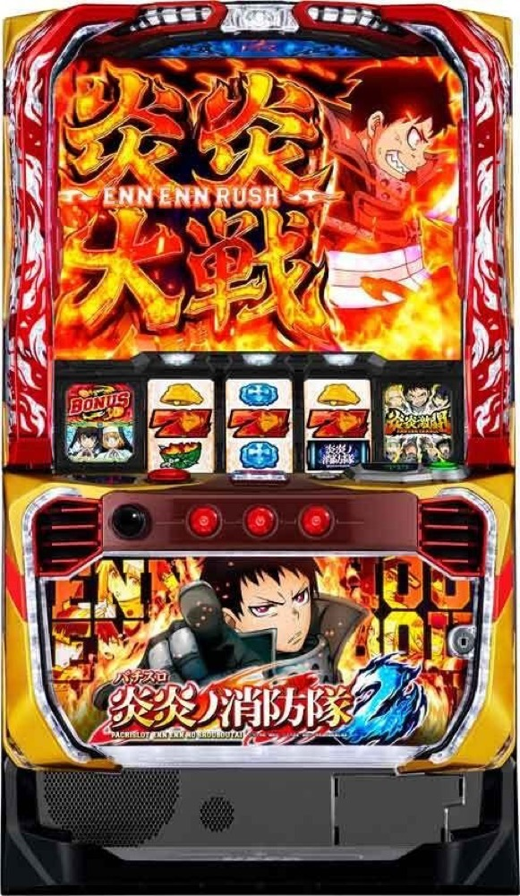

Lパチスロ 炎炎ノ消防隊2
REGから30G＋αの伝導者の罠へ。炎炎激闘・炎炎大戦を突破し、森羅万象とアドラバーストを狙う。
- 導入
- 2026年2月
- メーカー
- SANKYO
- 分類
- パチスロ
主要スペック
初当りはREGまたはSPエピソードBONUS。REG後の30G＋α『伝導者の罠』、15G＋αの炎炎激闘・炎炎大戦・紅J大戦、BONUS連、8Gの森羅万象、20G＋JACのアドラバーストまでを専用画面で体験できます。
- REG約85枚・SPエピソードBONUS約200枚
- 炎炎激闘は15G＋α・BONUS期待度約57%
- 炎炎大戦は約80%、紅J大戦は約90%、森羅万象は8G・約28%
Lパチスロ 炎炎ノ消防隊2の見どころと計算条件
初当りはREGまたはSPエピソードBONUS。REG後の30G＋α『伝導者の罠』、15G＋αの炎炎激闘・炎炎大戦・紅J大戦、BONUS連、8Gの森羅万象、20G＋JACのアドラバーストまでを専用画面で体験できます。
スマスロ 炎炎2を数字で早分かり
初当りBONUSから炎炎ループ、アドラバーストまでの流れと、設定ごとの結果差を固定レートで比較できます。
30秒で分かるスマスロ 炎炎2
約85枚のREG後に30G＋αの伝導者の罠を突破し、15G＋αのBONUS高確をループしてアドラバーストを狙うBONUS連鎖型です。
こんな遊び方に向いている
- REGから炎炎ループまでをPUSHで見たい
- 炎炎激闘・炎炎大戦・紅J大戦の差を比べたい
- 森羅万象からアドラバーストまで体験したい
遊ぶ前に確認したいこと
- 初当り・炎炎ループ確率、純増、主要ゲーム数は公開値
- 炎炎ループ中のREGはなし
- 未公表のBONUS振り分けは体験用代表値
初当りBONUSと伝導者の罠
通常時は十字目変換、十字リプレイ、規定ゲーム数からBONUSを目指します。初当りは主にベルナビ10回・約85枚のREGで、終了後は30G＋αの『伝導者の罠』へ移行します。
SPエピソードBONUSは約200枚を獲得し、消化後は炎炎激闘または炎炎大戦へ。専用画面ではREG／SPエピソードBONUSをPUSHで開き、伝導者の罠を30G進めて炎炎ループ当落を判定します。
炎炎激闘・炎炎大戦・紅J大戦
炎炎激闘は15G＋αでBONUS期待度約57%。十字目変換や十字リプレイから伝導者決戦へ発展し、勝利でBONUSとなります。
炎炎大戦は15G＋α・BONUS期待度約80%、上位の紅J大戦は約90%。BONUS当選後は同じ高確率状態へ戻るループを、1セットごとのPUSHで表示します。
BONUSと炎炎BOOST
炎炎ループ中は約200枚の炎炎BONUS・ラッキースケベられBONUSを中心に、平均約550枚の炎炎BOOSTや上位報酬を抽選します。
BONUS種類と獲得枚数をPUSH後に表示し、消化時間を設けてから次の炎炎ループへ進みます。REGは炎炎ループ中の報酬には含めません。
森羅万象からアドラバーストへ
森羅万象は8G継続し、成功期待度は約28%。最終ゲームのPUSHで成功すればアドラバーストへ進みます。
アドラバーストは純増約5.8枚/G、20Gの小役ゲームとJACで構成。JACは100〜300枚を獲得し、赤7揃い時は小役ゲーム数の上乗せも表示します。
固定条件と簡略化する範囲
- 約33G/50枚・1,000円46枚貸し・5.2枚交換で固定
- 設定1〜6のBONUS・炎炎ループ初当りと出玉率は公開値
- REG、伝導者の罠、3種類の炎炎ループ、森羅万象、アドラバーストを専用進行
- BONUS振り分け、炎炎大戦への昇格率など未公表部分は体験用代表値
- 19,000枚到達時はコンプリート表示
平均Gと投資目安の計算
掲載する炎炎ループ初当り約1/684は設定1基準です。当サイトでは50枚あたり33G、1,000円46枚貸しの固定条件から、設定1基準の平均投資目安を約22,500円と計算します。
シミュレーターでは設定1〜6を均等抽選します。設定1〜6で公開されている初当り値を個別に使います。公開されていない特化ゾーン・上位到達率の設定差は加えません。 換金は5.2枚交換で固定し、結果とランキングに設定を表示します。
シミュレーション結果の見方
当るまで初当りBONUS・炎炎ループまでのゲーム数
設定設定1・2・3・4・5・6から抽選された今回の設定
上位到達森羅万象とアドラバーストへの到達
最終収支差枚と5.2枚交換の収支目安
結果は自動で「マイ記録」に保存され、同じ機種を何回試したか、最高収支、勝率をあとから確認できます。
簡易シミュレーターについて
初当りBONUS・炎炎ループ・アドラバーストの流れを固定条件で体験できます。JavaScriptを有効にすると、この位置にシミュレーター、演出、マイ記録、機種別ランキングが表示されます。
結果は娯楽・確率理解のための参考表示です。金銭的価値や交換価値はなく、実際の勝敗や収支を保証しません。18歳未満の方の利用はお控えください。
スマスロ 炎炎2のよくある質問
スマスロ 炎炎2はどんな台？
初当りはREGまたはSPエピソードBONUS。 REG約85枚・SPエピソードBONUS約200枚が主な確認ポイントです。
スマスロ 炎炎2の平均投資目安は？
設定1基準の炎炎ループ初当り約1/684と、50枚あたり33G・46枚貸しの固定条件から、平均22,500円を目安として表示します。実際の設定や遊技状況で結果は変わります。
設定とゲームの流れはどう抽選する？
開始時に設定1・2・3・4・5・6から1つを均等抽選し、初当りBONUS、炎炎ループ、森羅万象、アドラバーストの順で到達を判定します。設定は最終結果とランキングに表示します。
収支はどう計算する？
1,000円46枚貸し・5.2枚交換の固定条件で投資、換金、収支目安を計算します。実店舗の再プレイ、持ちメダル、端数処理は含みません。